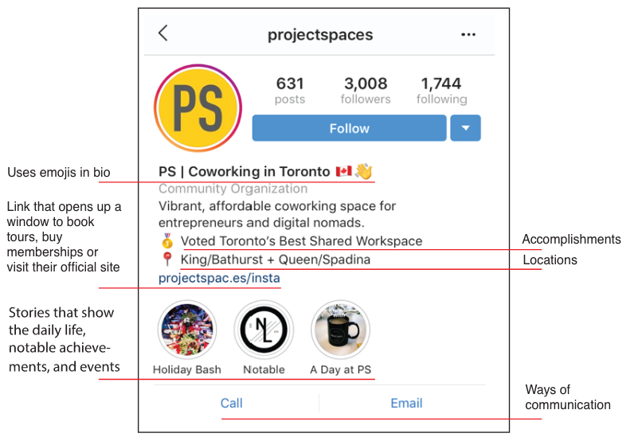
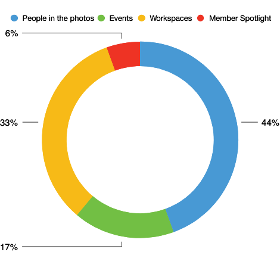
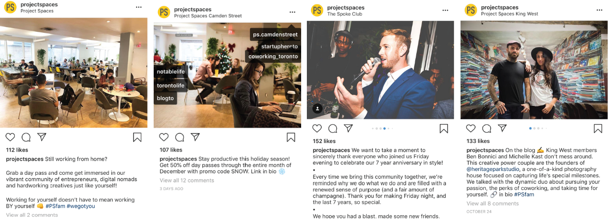

This Project focuses on elevating NUVO Network’s social media presence. We focused on intaqgram becaused it showed higher levels of activity . We propose
a focus on instagram, to create a more cohesive and visually appealing layout. No matter where an individual
may be or what they are looking for, this space is where members and future members can see what NUVO has to offer.
Interactivity and community involvement are key.
In conducting this research, we intend to use various methods of research to collect information from different
members of NUVO Network (primary source), as well as other company examples (secondary sources). We will use this
information to develop a website that best suits the needs of NUVO Network.
How can we improve how NUVO interacts with tenants and potential members through their social media platforms?
Create a welcoming first impression of NUVO
To invite more people to share and connect
Promoting a active and thriving community to those passing by
The interview will be a very important aspect of our research still we will be able to get an account of who things work within the company and have the opinions of the staff and members. We will be able to create profiles based of of real people who attend these facilities. The interviews let us observe the reactions and the emotions of individual people and how they feel about the company. With this information we are capable of obtaining new and updated information on the company and members.


Amount of posts: 10
Average amount of tags per post: 6
Average amount of likes per post: 113
Number of post they were tagged in: 31

Project Spaces understands connecting on a personal level is important. They connect with their members by tagging the members and people in their photos. Consistency is another huge factor in their feed. The quality of the photos matches one another, the colours and subject matter are cohesive, they also post post frequently.
In conclusion, by analyzing other social media platforms of other co working spaces, we have discovered that using all features of the platform (stories, hashtags, reposting, etc.) can really increase community involvement and overall traffic of the platform. Should NUVO choose to implement these ideas, we believe they could benefit significantly.